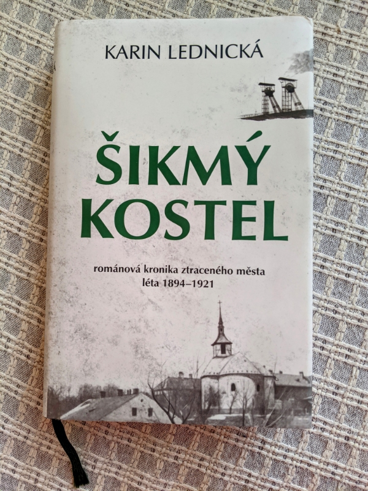

Šikmý kostel je jednou z těch knih, která vás v uplynulém roce asi nemohla minout. Jeden čas se o ní všude mluvilo, psalo, každý ji četl… A tak nazrála chvíle, abych si k ní také našla cestu - tím spíš, že o ní všichni hovořili jen v superlativech a já se potřebovala přesvědčit, jestli za to skutečně stojí.
Děj této románové kroniky je umístěn do oblasti okolo dnešní Karviné na česko-polském pomezí a odehrává se v letech 1894-1921. Hned na začátku jsme svědky obrovského důlního neštěstí, které navždy poznamená životy všech hlavních hrdinů. Každý z nich se s nepřízní osudu popasuje po svém - někoho tragédie zlomí, jiný ji uchopí jako příležitost k životní změně. Když už to vypadá, že se vše usadilo v poklidných kolejích, do děje vstupuje první světová válka…
Autorka Karin Lednická odvedla ve svém debutu vskutku obdivuhodnou práci. Na bezmála 400 stránkách knihy vylíčila úsporně, ale zároveň čtivě hned několik lidských osudů, které se dříve nebo později vzájemně propletou. Zároveň (neboť příběh je vystavěn na skutečných událostech) se čtenář nenucenou formou dovídá o historických okamžicích, které hornický kraj a jeho obyvatele významně poznamenaly. Mně se tu rozhodně otevřela zcela neprobádaná oblast pohnuté česko-polské historie, o níž se ve školách vůbec nemluví, a kniha mě chytla hned při prvních stránkách.

Přestože za vznikem románu musí stát neuvěřitelné množství autorčiny badatelské práce, příběh je vyprávěn naprosto přirozeně, čtivě a s lehkostí. Pokud jste Šikmý kostel ještě nečetli, určitě byste to měli napravit - tohle je skutečně jedna z těch knih, již její pověst předchází zcela oprávněně! Vzhledem k tomu, že se jedná o románovou trilogii a pokračování příběhu už je v prodeji, myslím, že druhý díl na sebe v naší knihovničce rozhodně nenechá dlouho čekat :-)